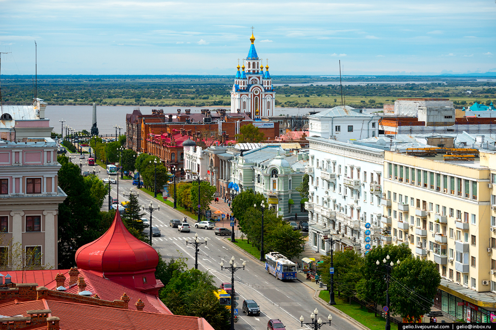

Улица Муравьёва-Амурского — магистральная и центральная улица города Хабаровска, расположена в Центральном районе. Идёт по вершине среднего из трёх холмов центра города от улицы Шевченко до улицы Гоголя. На концах улицы — площади Ленина и Комсомольская.
Улица названа в честь графа Н. Н. Муравьёва-Амурского — генерал-губернатора Восточной Сибири с 1848 по 1861 год.
До 1992 года улица называлась улицей Карла Маркса. В 1992 году улице восстановили историческое название, но переименована была только часть улицы до площади Ленина, включающая исторический центр. Участок после площади сохранил советское название.
На улице расположено множество зданий, являющихся памятниками архитектуры и истории. Некоторые из них: